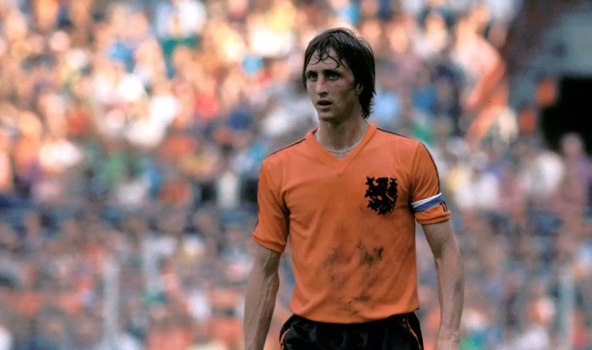

Home
Over Johan Cruyff
Johan Cruyff, een iconische figuur in de wereld van het voetbal, werd geboren op 25 april 1947 in Amsterdam, Nederland, en groeide uit tot een levende legende die niet alleen bekend stond om zijn uitzonderlijke voetbaltalent, maar ook om zijn revolutionaire visie op het spel. Als speler, coach en voetbalfilosoof heeft Cruyff een blijvende invloed gehad op de sport, waarbij zijn naam synoniem staat voor creativiteit, vernieuwing en totaalvoetbal. Dit korte stukje dient als een introductie tot het buitengewone leven en de nalatenschap van Johan Cruyff, wiens invloed zich uitstrekt tot ver buiten de grenzen van het voetbalveld.
Het Cruyff institutie

Het Cruyff Institute en de Johan Cruyff Foundation zijn twee afzonderlijke entiteiten die zijn opgericht om de
erfenis en filosofie van Johan Cruyff voort te zetten op verschillende gebieden.
Het Cruyff Institute, opgericht in 2002, is gericht op onderwijs en leiderschapsontwikkeling in de
sportwereld. Het biedt academische programma's en trainingen op het gebied van sportmanagement,
sportmarketing, coaching en andere disciplines. Het doel is om professionals op te leiden die de waarden van
Johan Cruyff kunnen verspreiden en implementeren in de sportwereld.
De Johan Cruyff Foundation, opgericht in 1997, concentreert zich op het creëren van sportmogelijkheden voor
kinderen over de hele wereld. De stichting is betrokken bij de bouw van Cruyff Courts, speelplekken die zijn
ontworpen om kinderen de kans te geven om te sporten en te spelen, ongeacht hun achtergrond. De focus ligt op
het bevorderen van gezondheid, teamwork en sociale ontwikkeling.
Samen vormen het Cruyff Institute en de Johan Cruyff Foundation de Cruyff Corporation, die zich inzet voor het
bevorderen van positieve veranderingen door middel van sport en onderwijs, en zo de nalatenschap van Johan
Cruyff levend houdt.